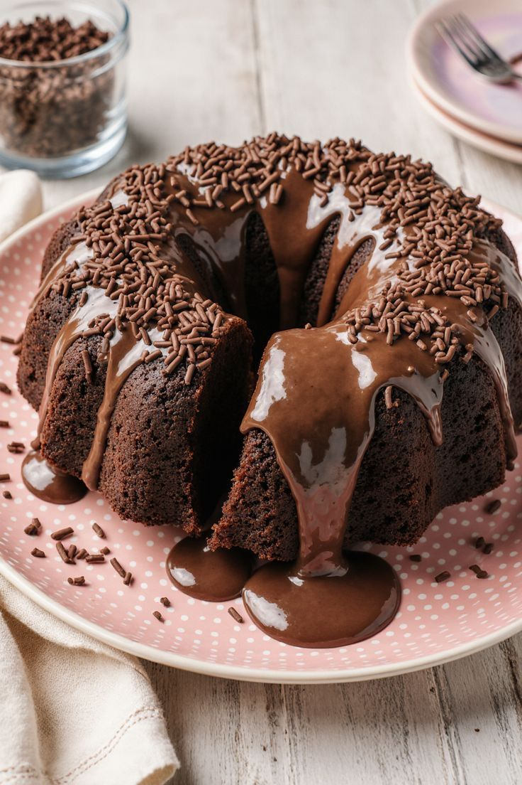

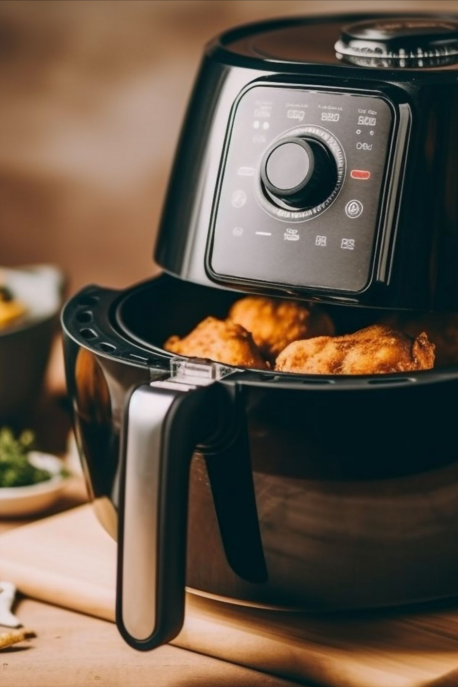
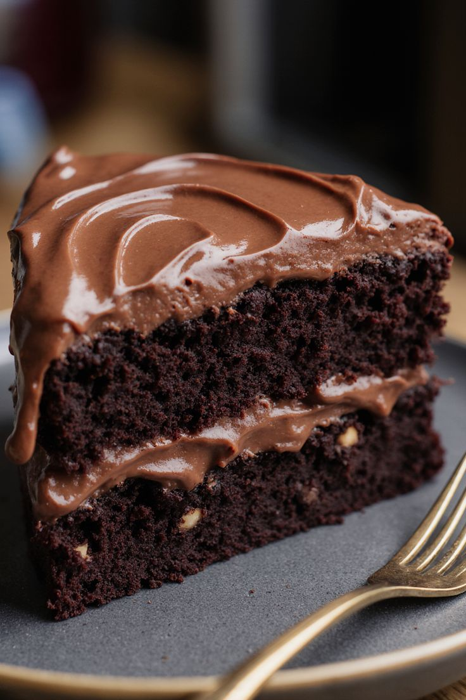

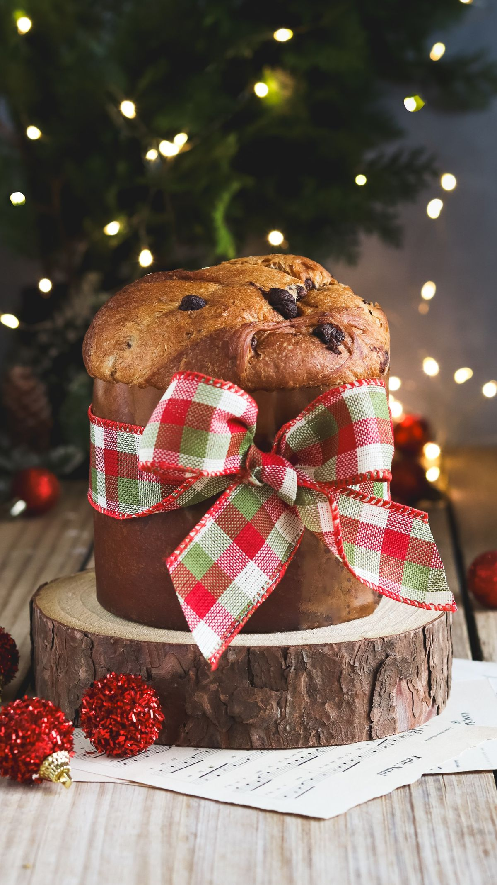
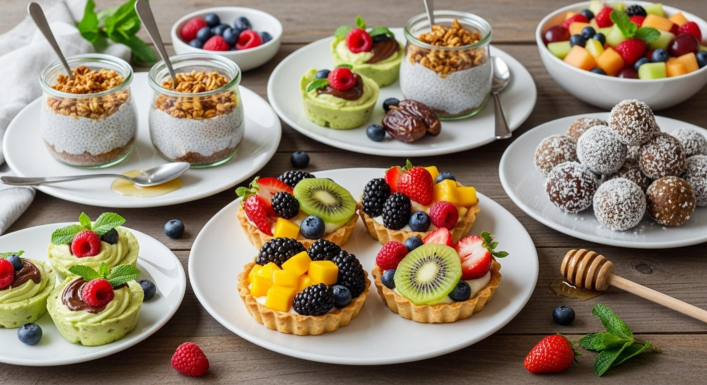
Super Pack de Receitas Fit
Sem açúcar, sem farinha — elaboradas por um chef profissional com mais de 10 anos de experiência na cozinha.
👨🍳 Mais de 250 receitas inéditas
Acesso imediato no seu e-mail · Garantia de 14 dias
Você irá receber
Com passo a passo simples o bastante para quem nunca cozinhou seguir de primeira.
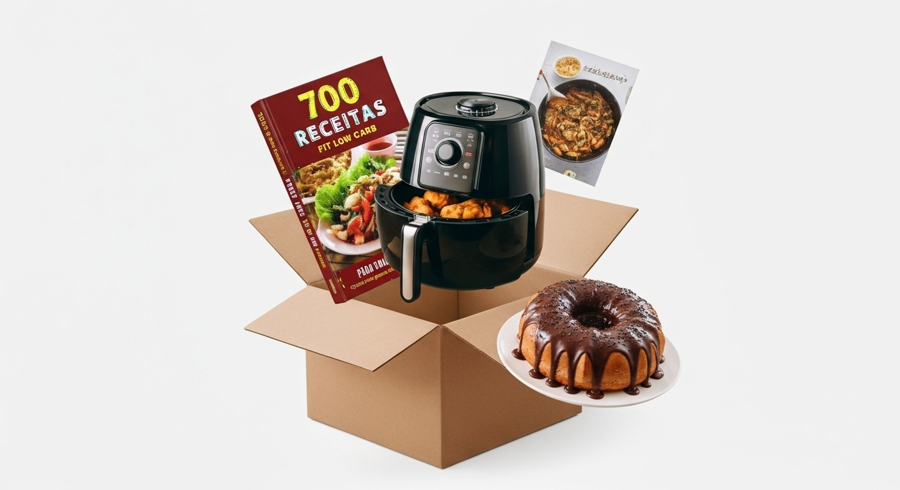
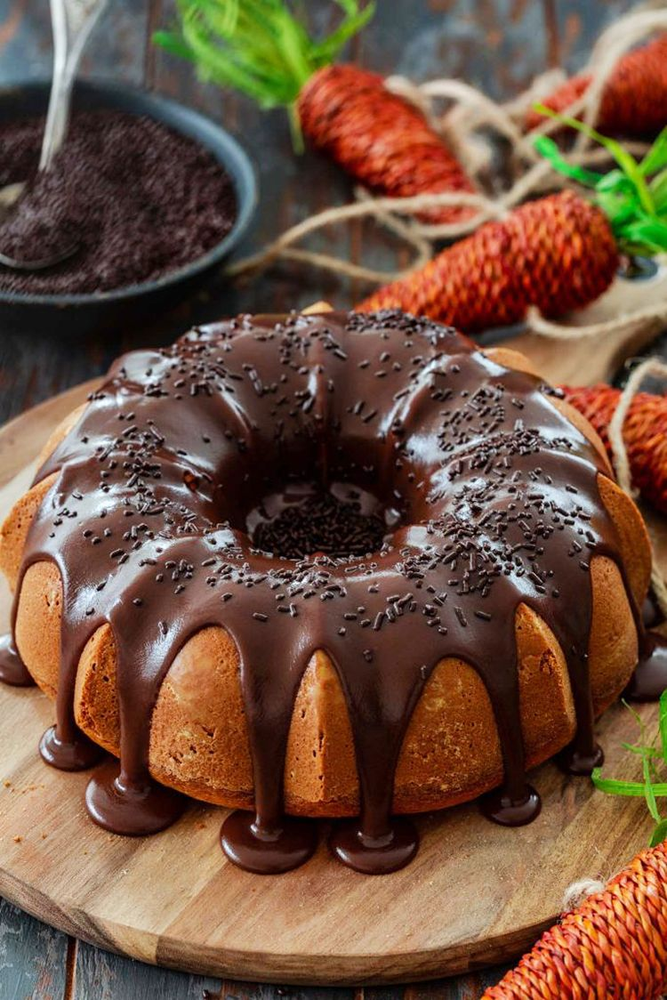
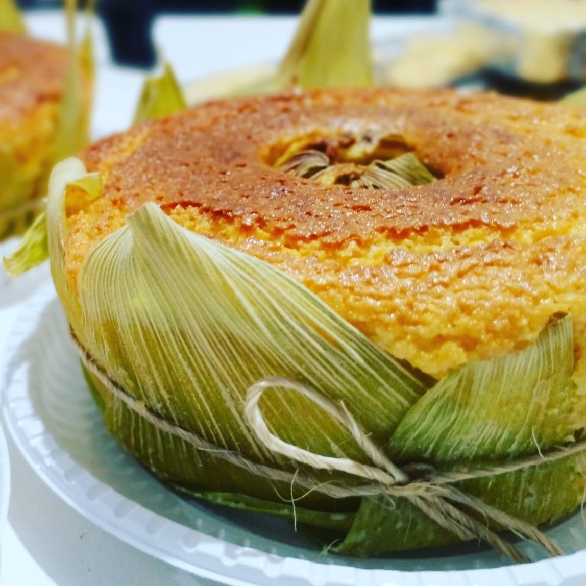
Imagine poder comer bolo todos os dias sem culpa, sem sair da dieta e ainda cuidando da sua saúde.
O que você vai aprender
Se você está lutando contra a vontade de doce
Se você está cansada de receitas sem graça
Ou se quer transformar de vez sua rotina alimentar sem abrir mão do sabor




Instantaneamente por e-mail após o pagamento. Zero espera.
6 materiais extras que entram junto, sem custo nenhum.
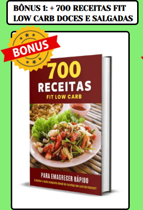
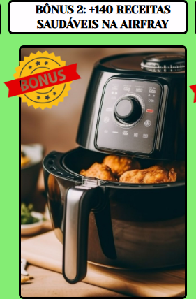
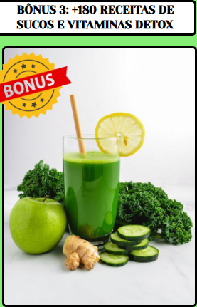
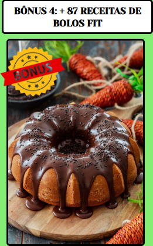
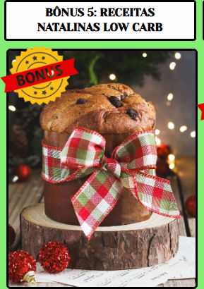
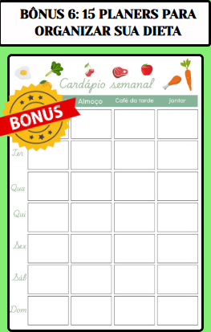
6 livros de receitas entram juntos no pacote sem custo nenhum
Recapitulando
Mas hoje você tem acesso por apenas
R$ 29,90
pagamento único · acesso imediato por e-mail
95% de descontoCompra segura · você recebe na hora no seu e-mail
Quem já está usando
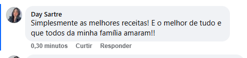
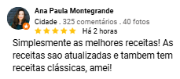
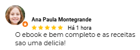
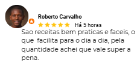
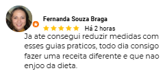
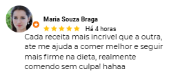
Satisfação garantida ou seu dinheiro de volta. Você tem até 14 dias para solicitar a devolução do valor pago — sem burocracia e sem precisar justificar.
Não. A maior parte das receitas usa o que você já tem em casa — e quando pede algo diferente, é fácil de achar em qualquer mercado.
Não. O passo a passo é escrito para quem está começando: ingrediente por ingrediente, na ordem, sem termo técnico.
Sim. Assim que o pagamento é confirmado, o acesso é enviado automaticamente para o e-mail usado na compra. Se não encontrar, confira também o spam e a aba de promoções.
Sim. Você tem até 14 dias para solicitar o reembolso integral, sem precisar explicar o motivo.
As receitas são sem glúten e sem leite, e trazem alternativas com e sem ovo e com e sem açúcar. Ainda assim, confira sempre os rótulos e, em caso de alergia diagnosticada, fale com seu nutricionista.